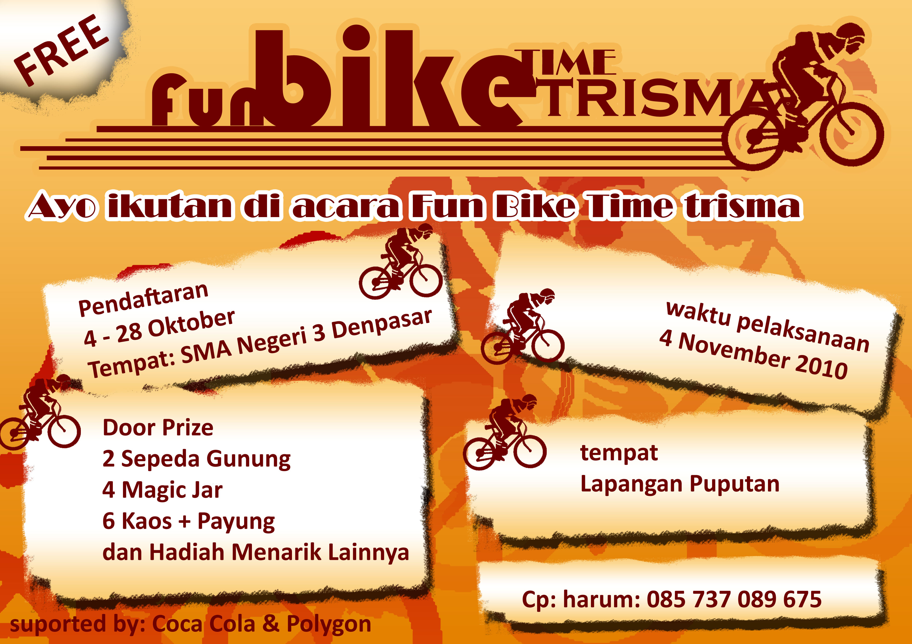
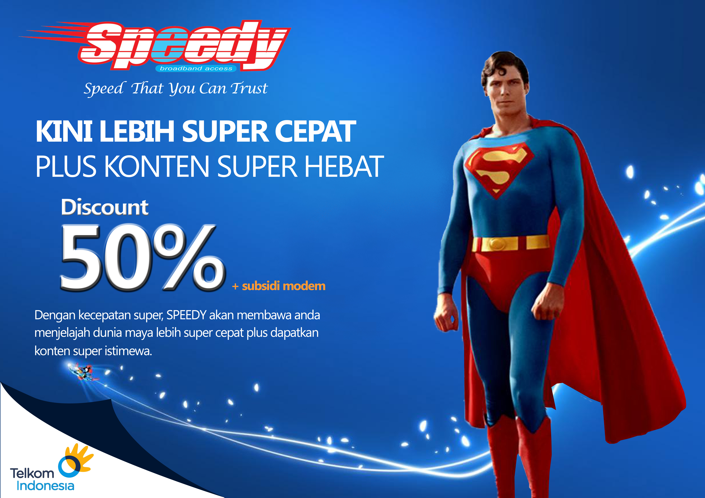
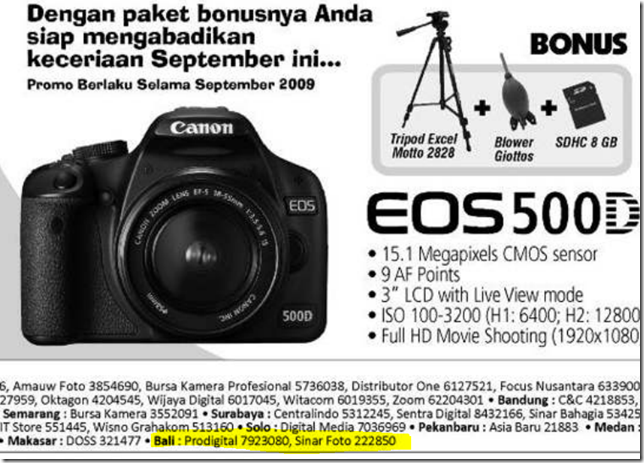
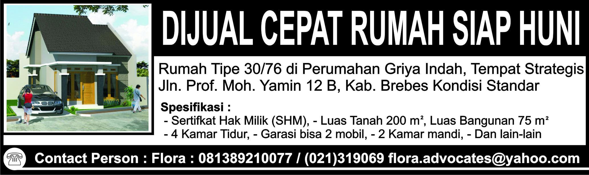
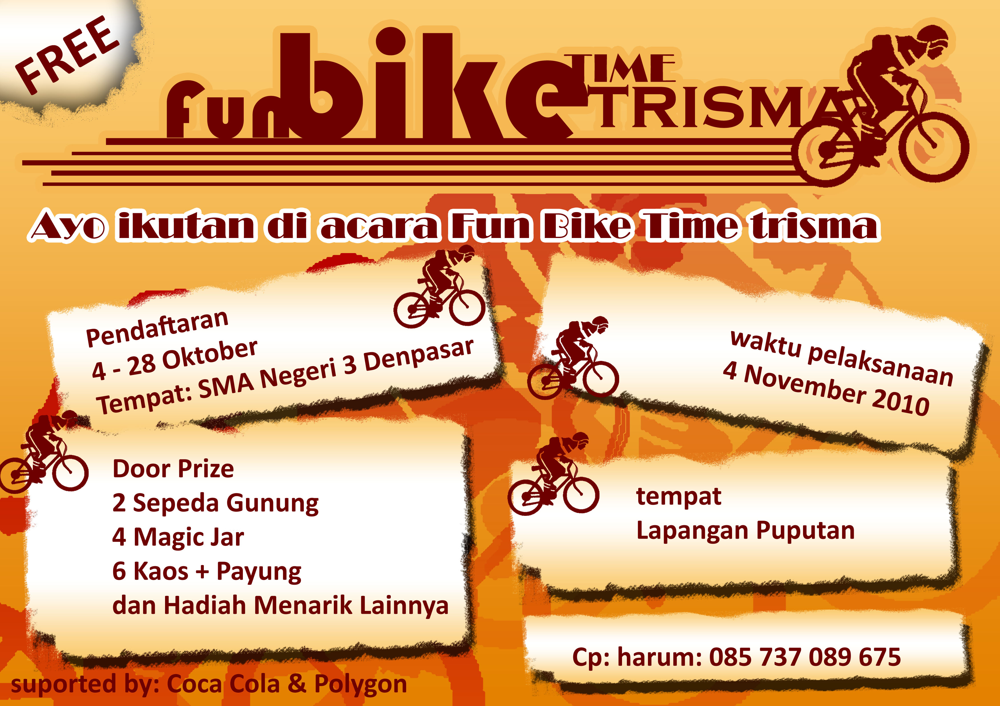
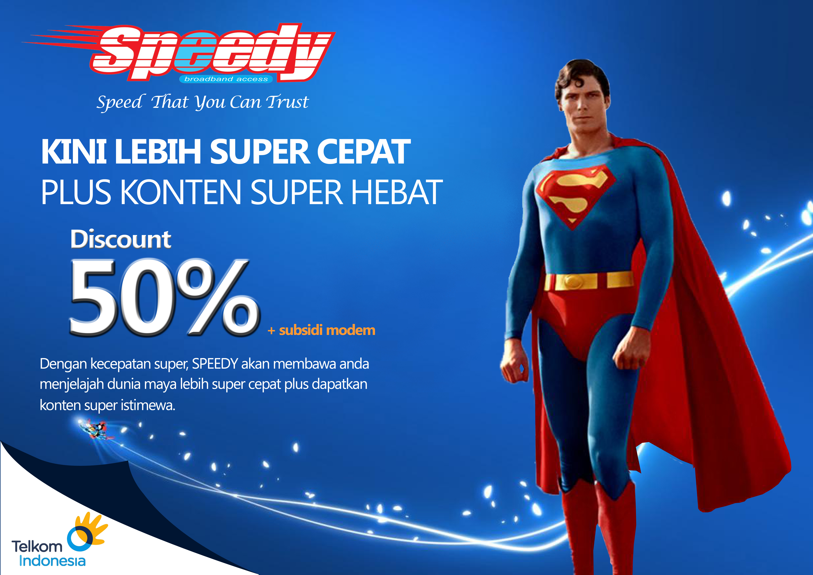
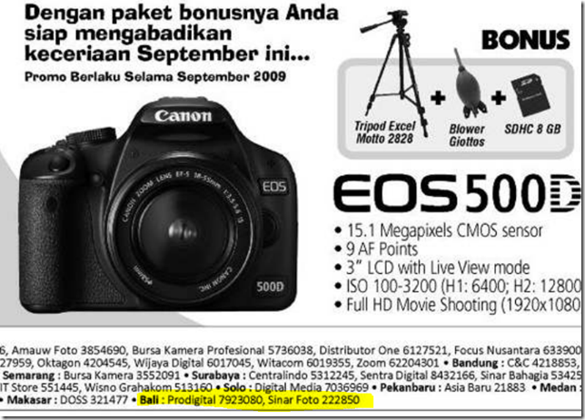
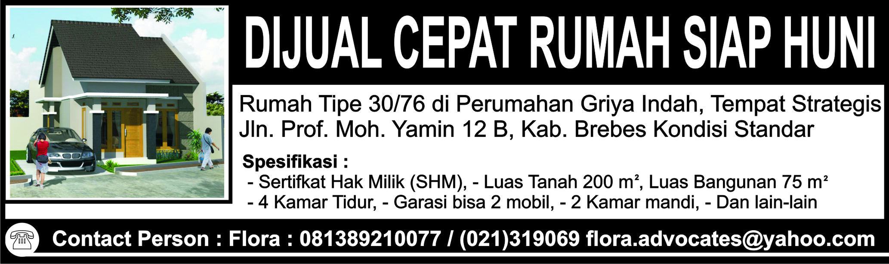

Jim Geovedi, Hacker Indonesia yang Ditakuti Dunia
Jim Geovedi adalah orang yang berbahaya. Pada masa ketika nyaris semua informasi dan manusia terkoneksi, Jim, jika dia mau, bisa setiap saat keluar masuk ke sana: melongok percakapan surat elektronik atau sekedar mengintip perselingkuhan anda di dunia maya.
Strategi Pertamina Atasi Kelangkaan BBM di Tol Cipali Saat Mudik
Subang - Manajemen PT Pertamina (Persero) menyatakan tak khawatir jika Stasiun Pengisian Bahan Bakar Umum (SPBU) di Tol Cikopo-Palimanan (Cipali) akan kekurangan bahan bakar minyak (BBM) ketika musim mudik.

Vinales Tercepat di Sesi Ketiga
Barcelona - Pebalap Suzuki, Maverick Vinales, menorehkan catatan waktu terbaik dalam free practice III MotoGP Catalunya. Vinales mengungguli Jorge Lorenzo dan Aleix Espargaro yang ada di urutan kedua dan ketiga.
Indonesia Dikalahkan Thailand, Mimpi Meraih Emas Sepakbola Terkubur Lagi
Singapura - Mimpi Indonesia untuk kembali meraih medali emas SEA Games di cabang sepakbola belum bisa diwujudkan tahun ini. Mimpi itu kandas lagi setelah dikalahkan Thailand 0-5 di babak semifinal.
Pique Dibela Usai Disoraki Pendukung Spanyol
Madrid - Bek Barcelona mendapatkan cemoohan dari pendukung timnas Spanyol akibat ucapannya pada perayaan kemenangan Los Cules. Pique memilih cuek dan belakangan mendapatkan pembelaan dari rekan satu tim.
Mendikbud: Meski Bocor UN Jangan Dihentikan, Tapi Disempurnakan
Jakarta - Gubernur DKI Jakarta Basuki Tjahaja Purnama atau Ahok memastikan kepala SMA Negeri 3 Retno Listyarti akan dipecat. Dia dipecat karena tidak berada di sekolah saat UN, tapi berada di SMA 2, Jakarta Barat.
Menteri Anies: Pembocor Soal UN Khianati Ribuan Siswa Amanah
Jakarta - Bareskrim Polri menangkap terduga pembocor soal Ujian Nasional atau UN 2015 melalui Google Drive. Tindakan ini dianggap sebagai bentuk pengkhianatan kepada puluhan ribu orang, yang berusaha disiplin dan amanah menjaga soal sampai kepada siswa.

 






